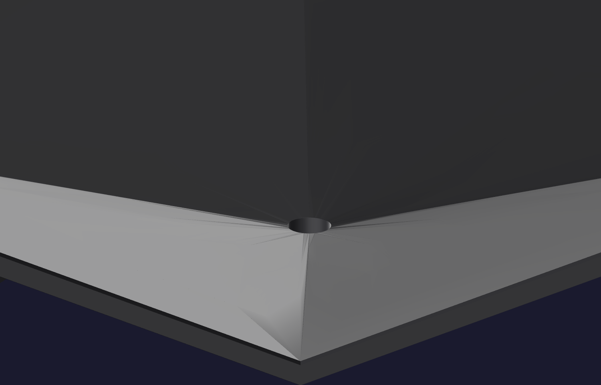

Off the bed12
Open the rod socket
The rod socket in the core is modelled at 6.45 mm for a 6.35 mm rod — 0.1 mm of clearance, which is nothing. As printed, the entry lip comes out tighter than the rod. Expect to clear it. This is a step, not a defect.

- Try the actual rod first. Not a drill bit, not a gauge pin — the dowel you will cast with.
- Clear the entry lip. Take the constriction at the mouth back to the socket's own diameter. Work from the mouth inward only.
- Use a depth stop. The socket bottoms at 28.8 mm and is blind. The closed end is a modelled backing cap; break through it and the core is scrap.
- Confirm the seating. The rod must slide in by hand and bottom at 28.8 mm, leaving 22.0 mm standing proud. Withdraw and re-seat it a few times; it should not bind at any depth.
⛔ Nominal, and it stays nominal
This socket takes no coating, no primer and no release, ever. The rod is the funnel's
entire spout bore, ground to a ten-thousandth — anything you add here you cast into
the part.